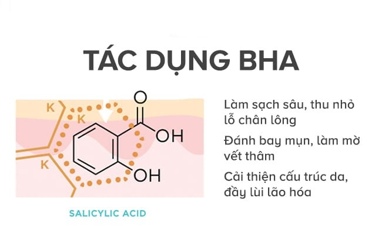
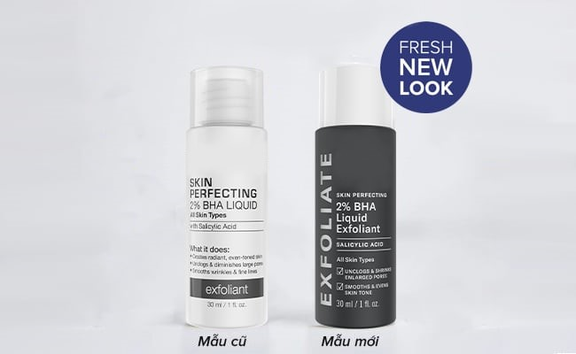
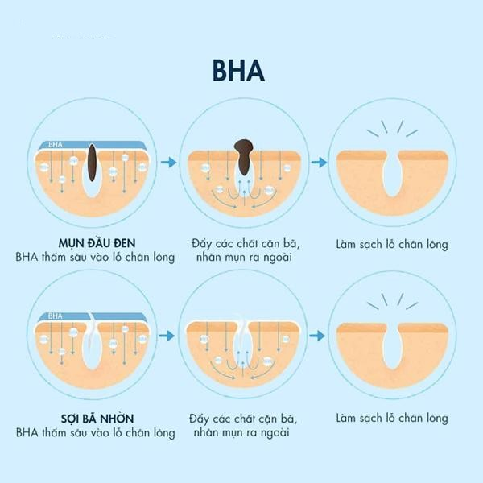
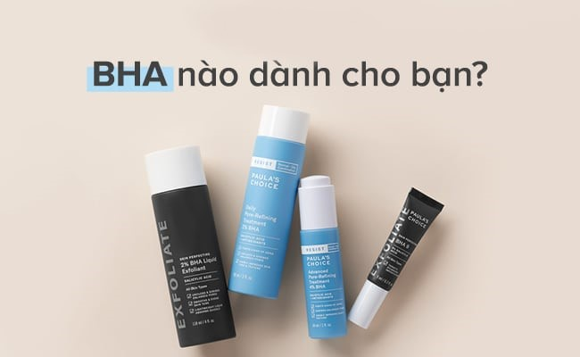
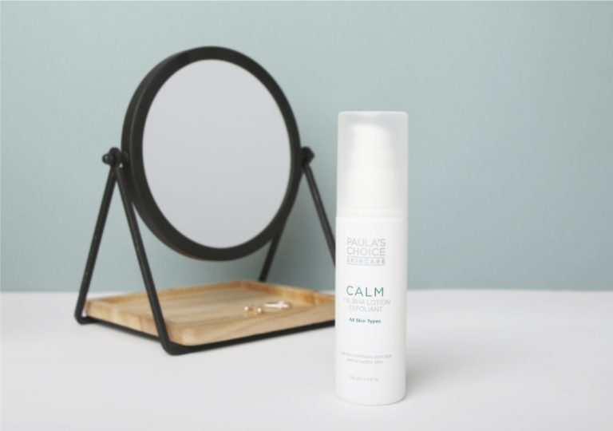
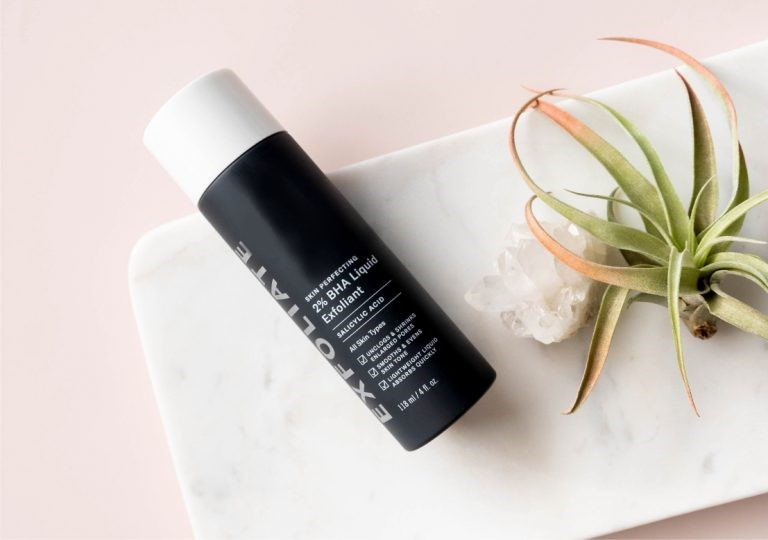
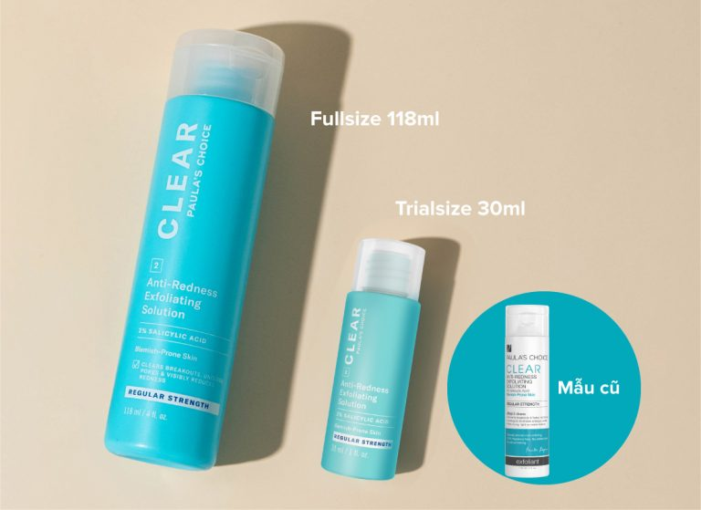
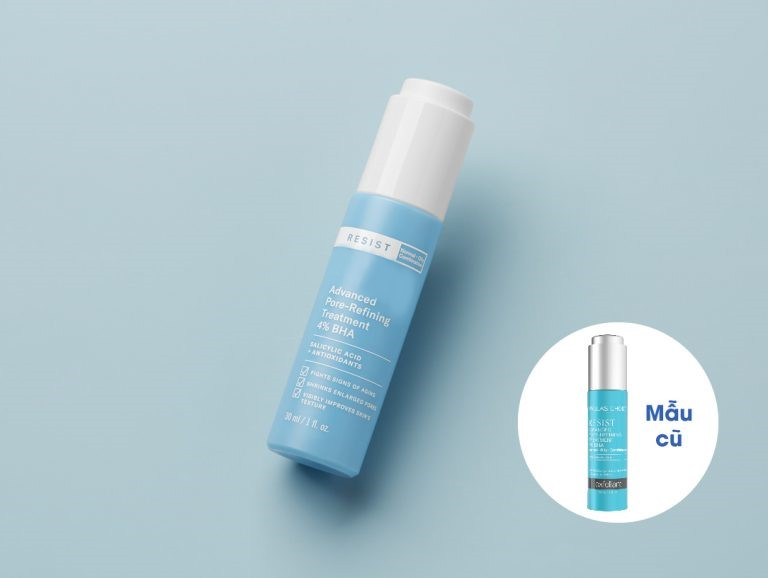
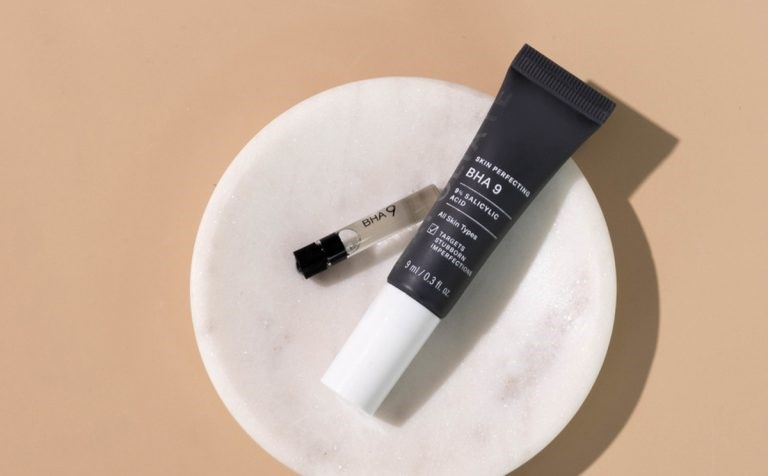

BHA là gì? Công dụng của BHA trong việc chăm sóc da như thế nào? Hãy cùng Paula’s choice Việt Nam đi tìm hiểu chi tiết trong bài viết dưới đây để có thể chăm sóc làn da một cách tốt nhất.
BHA là tên viết tắt của Beta Hydroxy Acid
BHA là tên viết tắt của Beta Hydroxy Acid. Đặc điểm nổi bật của thành phần loại bỏ tế bào chết này đó là tan trong dầu và hoạt động bên trong lỗ chân lông để giải quyết tình trạng bít tắc. Vậy nên làn da dầu, lỗ chân lông to và bề mặt da không mịn màng thường được giải quyết bằng BHA.
BHA phổ biến nhất là Salicylic acid, phần lớn được chiết xuất từ vỏ cây liễu, dầu của cây lộc đề xanh. Đó đều có nguồn gốc từ tự nhiên nhiều tác dụng và có lợi cho làn da. Trong các sản phẩm chăm sóc da với thành phần chính là BHA, nồng độ pH của da càng thấp thì hiệu quả của BHA mang lại sẽ tốt hơn và ứng với đó là nồng độ BHA thông thường 0.5% – 2%.
Với những khái quát nhất về BHA bên trên, cùng khám phá lợi ích của BHA mang lại cho da để biết tại sao nó đã góp phần làm thay đổi quan điểm làm sạch da toàn cầu.

Đây là một trong những tác dụng đầu tiên của loại bỏ tế bào chết BHA trên da. Với đặc tính đi sâu bên trong lỗ chân lông nên khi sử dụng loại bỏ tế bào chết BHA sẽ rửa trôi bụi bẩn, dầu thừa tích tụ bấy lâu nay. Những yếu tố gây bít tắc lỗ chân lông và nguy cơ dẫn đến mụn đã được đẩy lùi sớm nhờ thành phần BHA hoạt động tích cực.
Khác với phương pháp loại bỏ tế bào chết truyền thống, tác động bên trên bề mặt da và có thể gây chà xát, làm tổn thương da khiến da kích ứng, nhạy cảm thì BHA có thể đi sâu vào bên trong lỗ chân lông, cải thiện kích thước lỗ chân lông.
Có rất nhiều nguyên nhân dẫn tới xuất hiện mụn trên làn da của bạn. Trong số đó không thể không kể đến tác động từ bụi bẩn, dầu thừa, tế bào chết tích tụ lâu ngày mà không được loại bỏ. Ngoài ra chọn sai phương pháp loại bỏ tế bào chết cũng là nguyên nhân khiến mụn liên tục tái phát.
Loại bỏ tế bào chết BHA đi sâu vào bên trong lỗ chân lông và khiến những tác nhân gây mụn phải đầu hàng sớm và không có cơ hội tái phát nên đây được coi là quyết định đúng đắn giải quyết mụn. Mụn trứng cá, mụn đầu đen hay mụn viêm đều có thể chọn nồng độ BHA phù hợp để sử dụng kiên trì và cải thiện sớm. BHA cũng tham gia giải quyết hệ quả của mụn để lại như vết thâm sau mụn hay sẹo nên đang từng bước hoàn thiện quy trình chăm sóc da mụn khép kín.
Nhờ công thức độc đáo, không gây bào mòn da mà những tế bào chết được loại bỏ nhẹ nhàng bởi BHA. Cơ hội để cấu trúc da được cải thiện, giảm nếp nhăn và giúp làn da trông trẻ trung, đều màu hơn.
Với những đáp án cho câu hỏi BHA có tác dụng gì bên trên đã gợi ý cho bạn những câu trả lời ắt hẳn cần dùng loại bỏ tế bào chết BHA cho làn da dầu, da hỗn hợp của mình.
Loại bỏ tế bào chết hóa học BHA là một ý tưởng tuyệt vời giúp xử lý bài toán tế bào chết cứng đầu, sâu bên trong lỗ chân lông. Có những gạch đầu dòng khiến bạn nên lựa chọn phương pháp này:
Không tác động vật lý chà xát làm tổn thương bề mặt da, xác định được loại da phù hợp để sử dụng và có nồng độ phù hợp để lựa chọn da thích nghi.

Một sản phẩm BHA coi là best seller từ thương hiệu skincare toàn cầu
Đi sâu làm bên trong lỗ chân lông nên tế bào chết, bụi bẩn, dầu thừa không có cơ hội để bám trụ lại trên da. Từ đó ngăn chặn những nguy cơ tiềm ẩn gây ra mụn, da nhạy cảm và những mối quan tâm da khác.
Thực hiện trực tiếp trên da sau bước làm sạch và cân bằng da trong quy trình chăm sóc da. Bởi khi rửa mặt da thường có tính kiềm và dùng toner da sẽ trở về trạng thái cân bằng pH, điều kiện BHA hoạt động tốt.
BHA đẩy mụn ẩn, nếu đó là sự thật thì bạn nên vui hay nên buồn hoặc không cảm xúc về hiện tượng này trên da. Có thể nhắc đến mụn là bạn đang thấy băn khoăn và nghi ngại với những sản phẩm giúp bạn đối mặt với nó.
Sự thật: Khi bụi bẩn, tế bào chết, dầu thừa được loại bỏ là cơ hội để mụn ẩn kéo lên khi đang bị tắc nghẽn dưới lỗ chân lông. Không hoàn toàn tất cả những ai sử dụng loại bỏ tế bào chết BHA nhẹ dịu đều gặp hiện tương này. Xét đến khía cạnh mụn không thoát được ra ngoài còn là vấn đề lớn hơn với da khi ngày càng tích tụ và có thể trở thành mụn viêm hay mụn tái phát khi chọn sai phương pháp chăm sóc. Mụn sẽ hết và da dẻ sẽ mịn màng trở lại khi duy trì thực hiện và chăm sóc đúng cách.

Tình trạng mụn xuất hiện và không ngừng cải thiện trong khoảng thời gian 6 tuần bạn nên xem xét lại quy trình chăm sóc và sản phẩm đang sử dụng để tìm giải pháp phù hợp hơn hoặc ngừng sử dụng.
Với mục tiêu giải thoát lỗ chân lông, trị mụn ẩn cứng đầu trên da, chỉ có cách skincare không làm tổn thương bề mặt da, tác động nhẹ nhàng hiệu quả là khi được sử dụng BHA. Với mụn ẩn, ta chỉ cần tìm được đầu vào thích hợp để tạo điều kiện làn da đối mặt với nó và trải nghiệm sự thay đổi khi loại bỏ mụn ẩn sau này. BHA trị mụn ẩn là một ý tưởng không tồi.
Ngay từ đầu, đặc điểm của BHA đã ăn khớp với những mối quan tâm loại bỏ tế bào chết nhẹ dịu và an toàn với da. Trải nghiệm mới loại bỏ tế bào chết không phải là phương pháp chà xát truyền thống. Bởi vậy, bạn có thể sử dụng loại bỏ tế bào chết BHA mỗi ngày để nâng cao hiệu quả cho các bước tiếp theo.

Nên lựa chọn loại BHA phù hợp với loại da và vấn đề da
Loại bỏ tế bào chết BHA được cho là sản phẩm thay đổi quan điểm làm sạch những ai đang quan tâm đến quá trình chăm sóc da. Để đảm bảo những hiệu quả của BHA mang lại, bạn nên kết hợp thêm sản phẩm chống nắng.
Được đánh giá tốt bởi phản hồi người dùng, BHA Paula’s Choice Skincare là một trong số thương hiệu được khách hàng tin tưởng và chứng thực hiện quả. Cùng chúng tôi khám phá những sản phẩm bha loại nào tốt mà bạn đang cần được gợi ý để trải nghiệm

Nồng độ BHA 1% hoàn toàn dịu nhẹ giúp loại bỏ bụi bẩn nhưng không gây ảnh hưởng đến làn da nhạy cảm. Sản phẩm đi sâu bên trong lỗ chân lông để loại bỏ tế bào chết, dầu thừa, cặn bã nhờn tạo điều kiện tốt nhất cho những bước chăm sóc da tiếp theo.
Ưu điểm:

Dòng sản phẩm BHA best seller của Paula’s choice, sản phẩm Skin Perfecting 2% BHA Liquid Exfoliant nhận được cơn mưa lời khen từ các tín đồ skincare. Hiện tại, sản phẩm này giữ vị trí quán quân trong toàn bộ các sản phẩm loại bỏ tế bào chết hóa học. Bỏ lỡ nó thật là một điều hối tiếc.
Ưu điểm:

Với 2% Salicylic Acid và sản phẩm có kết cấu nhẹ dịu, dòng loại bỏ tế bào chết cho da mụn cực kì hiệu quả trong bộ sưu tập Clear đã chứng tỏ sức thu hút của nó.
Ưu điểm của sản phẩm:

Sản phẩm phù hợp cho da thường đến da dầu, da hỗn hợp gặp những vấn đề lão hóa da sớm.
Ưu điểm:

Đây được coi là kẻ thù số 1 của mụn đầu đen. Sản phẩm chăm sóc da với vấn đề mụn đầu đen khó ưa được giải quyết nhờ sự xuất hiện của Resist BHA 9.
Ưu điểm đặc biệt sản phẩm:
Cách tốt nhất để có được sản phẩm chăm sóc da loại bỏ tế bào chết với BHA đó là lắng nghe nhu cầu làn da và tìm được cái tên giúp bạn giải quyết mối bận tâm đó tốt nhất!
Cùng thẳng thắn nhìn vào những điểm cần khắc phục của sản phẩm để bạn biết skincare không chỉ là chọn sản phẩm phù hợp, cũng nên dành lưu ý vấn đề gặp phải:
Như đã phân tích ở trên, đẩy mụn là hiện tượng bình thường khi sử dụng BHA. Tại sao lại như vậy? Bởi nó hoàn toàn nằm trong cơ chế hoạt động của BHA. Chỉ bằng con đường ngắn hơn và bằng cách an toàn hơn, mụn tiềm ẩn dưới da mà không có cơ hội thoát ra ngoài vì da chết và dầu thừa chặn đứng, BHA là chìa khóa mở cánh cổng đó. Vị trí thường thấy của hiện tượng này đó là vùng da nhiều mụn ẩn, mụn đầu đen. Tuy nhiên, khi sử dụng bạn hãy nhận tư vấn của chuyên viên. Bạn có thể dễ dàng nhầm lẫn với hiện tượng đẩy mụn không kiểm soát. Bạn cần chú ý và chăm sóc cẩn thận cũng như phân biệt được tình trạng da của mình sau khi sử dụng loại bỏ tế bào chết BHA đúng cách.
Cảm giác bị châm chích, da hơi căng và ngứa cũng là những hiện tượng có thể gặp phải khi bạn bắt đầu tiếp cận với BHA. Theo nhận định của chuyên gia, những biểu hiện đó hoàn toàn bình thường và bạn hoàn toàn có thể loại bỏ chúng bằng cách sử dụng đúng nồng độ BHA và tần suất khi làm quen khoảng 1 – 2 lần/tuần.
Đây là một hiện tượng dễ dàng lý giải. Sau khi loại bỏ được những tế bào chết với sản phẩm BHA thì làn da sẽ nhạy cảm với ánh nắng mặt trời. Do đó, bạn nên sử dụng vào quy trình chăm sóc da ban đêm hoặc nếu sử dụng ban ngày chắc chắn không thể thiếu kem chống nắng chỉ số SPF 30 hoặc cao hơn.
Đừng lo lắng bởi bạn sẽ được chỉ dẫn cách sử dụng BHA đúng cách để hạn chế nhất những vấn đề không mong muốn trên da.
Bạn đã biết được những tác dụng của sản phẩm chăm sóc da từ loại bỏ tế bào chết BHA nhẹ dịu mang lại. Vậy chăm sóc da với BHA đúng cách có tầm quan trọng với sức khỏe làn da và chính bạn:
1% BHA: Đây là mức thấp nhất, phù hợp với làn da nhạy cảm và nồng độ lựa chọn cho làn da làm quen từ từ. Đây cũng là nồng độ được lựa chọn phổ biến nhất của người dùng.
2% BHA: Nồng độ hoàn hảo với làn da và được cho là hiệu quả tốt – nhanh hơn 1% BHA. Cảm giác trải nghiệm ở nồng độ này đó là có thể hơi châm chích làn da và sau thời gian, sẽ sẽ làm quen tốt hơn.
4% BHA: Tương ứng với nồng độ cao hơn này là tần suất sử dụng nên 1-2 lần/tuần và da khỏe hơn thì mới nên chọn nồng độ này.
Xem thêm bài viết khác:
Thông tin về AHA là gì? Công dụng của AHA trong làm đẹp
Tác dụng của vitamin C với da không phải ai cũng biết